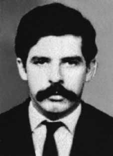

Carlos
Alberto
Soares
de Freitas
BIOGRAFIA
Carlos Alberto Soares de Freitas foi dirigente e fundador da Organização Revolucionária Marxista Política Operária (Polop) e do Comando de Libertação Nacional (Colina), em Belo Horizonte. Após o Ato Institucional Nº5 (AI-5), foi dirigente da Vanguarda Popular Revolucionária (VPR) e fundou, em 1969, a organização de luta armada Vanguarda Armada Revolucionária Palmares (VAR-Palmares). Desaparecido político, Beto, como era conhecido pelos amigos, e Breno, pelos companheiros de militância, foi preso em 15 de fevereiro de 1971, no Rio de Janeiro, e nunca mais foi visto. O Estado brasileiro nunca prestou contas sobre seu desaparecimento e seu corpo até hoje não foi encontrado.
Quatro meses após seu desaparecimento, seu irmão, Eduardo Soares de Freitas, viu um cartaz de “terroristas procurados” com uma foto do irmão com um “X” riscado por cima, numa delegacia em Itaguaí (RJ). Inês Etienne Romeu, a única sobrevivente da Casa da Morte, centro de tortura e execuções instalado por militares em Petrópolis, ouviu de seus carcereiros que Carlos Alberto havia passado por ali antes. De Ubirajara Ribeiro de Souza, o Zezão, um ex-sargento que participava das torturas na casa, ouviu a seguinte frase: “Seu amigo esteve aqui”. A frase deu título à biografia de Carlos Alberto de Freitas, publicada em 2012, de autoria da jornalista Cristina Chacel.
Carlos Alberto Soares de Freitas was leader and founder of the Revolutionary Marxist Political Workers Organization (Polop) and the National Liberation Command (Colina), in Belo Horizonte. After Institutional Act No. 5 (AI-5), he was leader of the Vanguarda Popular Revolucionária (VPR) and founded, in 1969, the armed struggle organization Vanguarda Armada Revolucionária Palmares (VAR-Palmares). The missing politician, Beto, as he was known by his friends, and Breno, by his fellow activists, was arrested on February 15, 1971, in Rio de Janeiro, and was never seen again. The Brazilian State never reported on his disappearance and his body has not been found to this day.
Four months after his disappearance, his brother, Eduardo Soares de Freitas, saw a “wanted terrorists” poster with a photo of his brother with an “X” crossed out over it, at a police station in Itaguaí (RJ). Inês Etienne Romeu, the only survivor of the Casa da Morte, a torture and execution center set up by the military in Petrópolis, heard from her jailers that Carlos Alberto had passed by there before. From Ubirajara Ribeiro de Souza, Zezão, a former sergeant who participated in the torture at the house, heard the following sentence: “Your friend was here”. The phrase gave the title to the biography of Carlos Alberto de Freitas, published in 2012, written by journalist Cristina Chacel.
Carlos Alberto Soares de Freitas fue líder y fundador de la Organización Revolucionaria de Trabajadores Políticos Marxistas (Polop) y del Comando de Liberación Nacional (Colina), en Belo Horizonte. Luego del Acto Institucional No. 5 (AI-5), fue líder de la Vanguarda Popular Revolucionária (VPR) y fundó, en 1969, la organización de lucha armada Vanguarda Armada Revolucionária Palmares (VAR-Palmares). El político desaparecido, Beto, como lo conocían sus amigos, y Breno, como lo conocían sus compañeros activistas, fue arrestado el 15 de febrero de 1971 en Río de Janeiro y nunca más se le volvió a ver. El Estado brasileño nunca informó sobre su desaparición y su cuerpo no ha sido encontrado hasta el día de hoy.
Cuatro meses después de su desaparición, su hermano, Eduardo Soares de Freitas, vio un cartel de “se busca terrorista” con una foto de su hermano con una “X” tachada, en una comisaría de Itaguaí (RJ). Inês Etienne Romeu, la única superviviente de la Casa da Morte, un centro de tortura y ejecución establecido por los militares en Petrópolis, escuchó por sus carceleros que Carlos Alberto había pasado por allí antes. Desde Ubirajara Ribeiro de Souza, Zezão, ex sargento que participó de las torturas en la casa, escuchó la siguiente frase: “Tu amigo estuvo aquí”. La frase dio título a la biografía de Carlos Alberto de Freitas, publicada en 2012, escrita por la periodista Cristina Chacel.
CIRCUNSTÂNCIAS DA MORTE
O último contato feito por Carlos Alberto Soares de Freitas foi no dia 15 de fevereiro de 1971, quando, de acordo declarações de Sérgio Emanuel Dias Campos, por volta das 9h, encontraram-se na rua Farme de Amoedo, nº 135, em Ipanema, onde Carlos Alberto havia alugado um pequeno apartamento.
O objetivo do encontro era combinar a permanência de Sérgio no apartamento por algum tempo, até a próxima viagem de Carlos Alberto, que ocorreria nos próximos dias. Durante o encontro, Carlos Alberto revelou a Sérgio que Antônio Joaquim de Souza Machado, por estar sem lugar para ficar, havia dormido no apartamento na noite anterior. Na ocasião, Carlos Alberto revelou que havia escondido anotações de contatos com os militantes da VAR-Palmares, em uma cômoda que ficava no quarto do apartamento que havia alugado, e então combinaram que em qualquer situação de ameaça a Carlos Alberto ou caso viesse a ser preso, Sérgio deveria destruir as anotações.
Combinaram um novo encontro naquele mesmo dia, por volta das 18 horas, em frente ao cinema Ópera, em Botafogo, para que Carlos Alberto entregasse uma cópia da chave do apartamento a Sérgio. Ao final do encontro, Carlos Alberto e Sérgio saíram juntos de ônibus. Sérgio seguiu em direção ao centro da cidade e Carlos Alberto desceu na Avenida Nossa Senhora de Copacabana, quase na esquina com a Avenida Princesa Isabel. Essa foi a última vez em que Sérgio esteve com Carlos Alberto, pois, na hora combinada para o encontro em frente ao cinema Ópera, Carlos Alberto não apareceu. Minutos depois, apareceram no local Rosalina Santa Cruz e seu companheiro “Marcelo”, que informaram a Sérgio que Carlos Alberto também não havia comparecido a um encontro com eles, nas proximidades do cinema.
Diante disso, Sérgio passou a considerar a possibilidade de Carlos Alberto ter sido preso e conforme o que haviam combinado no encontro daquela manhã, foi até o apartamento de Ipanema para destruir as anotações que Carlos Alberto havia escondido. Quando Sérgio chegou ao apartamento, por volta das 22h do mesmo dia, o local estava ocupado por agentes do Destacamento de Operações de Informações do Centro de Operações de Defesa Interna (DOI-CODI) do Rio de Janeiro, que prenderam Sérgio e levaram-no para as dependências do DOI-CODI, onde foi torturado.
No DOI-CODI, os agentes torturadores passaram a chamar Sérgio pelo nome de “Emílio”, o que o levou a concluir que os torturadores haviam tido algum contato com Carlos Alberto, já que ambos haviam acabado de retornar de um congresso da VAR-Palmares em Recife, onde Sérgio havia adotado tal codinome. Além de Carlos Alberto, nenhuma das pessoas que estiveram no congresso haviam sido presas até aquele momento. Com base no testemunho prestado ao Conselho Federal da Ordem dos Advogados do Brasil, em setembro de 1979, por Inês Etienne Romeu, única sobrevivente do centro clandestino de execução e tortura conhecido como Casa da Morte de Petrópolis, a Comissão Nacional da Verdade (CNV) afirma que Carlos Alberto Soares de Freitas foi o primeiro prisioneiro a morrer no local.
Segundo o depoimento de Inês Etienne, ela ouviu de seu carcereiro, “Camarão”, identificado recentemente como soldado reformado do Exército Antônio Waneir Pinheiro Lima, atualmente com 71 anos de idade, que “Breno” (codinome de Carlos Alberto Soares de Freitas) foi o primeiro “terrorista” que esteve preso na casa. O torturador “doutor Pepe”, codinome de Orlando de Souza Rangel, tenente-coronel do Centro de Informações do Exército (CIE), confirmou a Inês que ele foi o responsável pela prisão de Carlos Alberto Soares de Freitas, em fevereiro de 1971, e que seu grupo o havia executado. Ele disse que, à sua equipe, não interessava ter líderes presos e que todos os “cabeças” seriam sumariamente mortos, após interrogatório.
Na Casa da Morte, Inês ouviu do então sargento Ubirajara Ribeiro de Souza, que ele havia sido reconhecido por Carlos Alberto Soares de Freitas, pois haviam se conhecido jogando basquete em Minas Gerais. Ubirajara disse a Inês: “Seu amigo esteve aqui. Ele me reconheceu”. Segundo Ubirajara, Carlos Alberto Soares de Freitas teria permanecido preso e sendo torturado na Casa da Morte até abril de 1971, quando foi executado, naquele mesmo centro clandestino, com um tiro na cabeça.
De acordo com as pesquisas desenvolvidas pela CNV, pode-se inferir a participação do capitão José Brandt Teixeira, membro do CIE, nas investigações que culminaram nos sequestros de Carlos Alberto e Antônio Joaquim, e na prisão de Sérgio Emanuel. A operação que resultou na prisão dos três tinha como objetivo o desmantelamento de uma organização montada com o objetivo de operacionalizar a volta dos banidos políticos ao Brasil, à qual Carlos Alberto e Antônio Joaquim estavam diretamente ligados. Essa informação corrobora a suposição de que os dois desaparecidos foram levados à Casa da Morte, montada em Petrópolis, pelo CIE. Até a presente data, Carlos Alberto Soares de Freitas permanece desaparecido.
The last contact made by Carlos Alberto Soares de Freitas was on February 15, 1971, when, according to statements by Sérgio Emanuel Dias Campos, at around 9 am, they met at Rua Farme de Amoedo, nº 135, in Ipanema, where Carlos Alberto had rented a small apartment.
The purpose of the meeting was to arrange for Sérgio to stay in the apartment for some time, until Carlos Alberto's next trip, which would take place in the next few days. During the meeting, Carlos Alberto revealed to Sérgio that Antônio Joaquim de Souza Machado, having no place to stay, had slept in the apartment the night before. At the time, Carlos Alberto revealed that he had hidden notes on contacts with VAR-Palmares activists, in a chest of drawers in the bedroom of the apartment he had rented, and then they agreed that in any situation of threat to Carlos Alberto or if he were to be arrested, Sérgio should destroy the notes.
They agreed to meet again that same day, around 6 pm, in front of the Ópera cinema, in Botafogo, so that Carlos Alberto could hand over a copy of the apartment key to Sérgio. At the end of the meeting, Carlos Alberto and Sérgio left together by bus. Sérgio headed towards the city center and Carlos Alberto got off at Avenida Nossa Senhora de Copacabana, almost on the corner of Avenida Princesa Isabel. This was the last time that Sérgio was with Carlos Alberto, because, at the agreed time for the meeting in front of the Ópera cinema, Carlos Alberto did not show up. Minutes later, Rosalina Santa Cruz and her companion “Marcelo” appeared at the scene, informing Sérgio that Carlos Alberto had also not attended a meeting with them, close to the cinema.
Given this, Sérgio began to consider the possibility that Carlos Alberto had been arrested and, as agreed in the meeting that morning, he went to the apartment in Ipanema to destroy the notes that Carlos Alberto had hidden. When Sérgio arrived at the apartment, around 10pm on the same day, the place was occupied by agents from the Information Operations Detachment of the Internal Defense Operations Center (DOI-CODI) in Rio de Janeiro, who arrested Sérgio and took him to the DOI-CODI premises, where he was tortured.
At DOI-CODI, the torture agents began to call Sérgio by the name “Emílio”, which led him to conclude that the torturers had had some contact with Carlos Alberto, as both had just returned from a VAR-Palmares congress in Recife, where Sérgio had adopted that code name. Apart from Carlos Alberto, none of the people who were at the congress had been arrested until that moment. Based on testimony given to the Federal Council of the Brazilian Bar Association, in September 1979, by Inês Etienne Romeu, the only survivor of the clandestine execution and torture center known as the House of Death in Petrópolis, the National Truth Commission (CNV) states that Carlos Alberto Soares de Freitas was the first prisoner to die there.
According to Inês Etienne's testimony, she heard from her jailer, “Camarão”, recently identified as retired Army soldier Antônio Waneir Pinheiro Lima, currently 71 years old, that “Breno” (codename of Carlos Alberto Soares de Freitas) was the first “terrorist” who was imprisoned in the house. The torturer “Doctor Pepe”, codename of Orlando de Souza Rangel, lieutenant colonel of the Army Information Center (CIE), confirmed to Inês that he was responsible for the arrest of Carlos Alberto Soares de Freitas, in February 1971, and that his group had executed him. He said that his team was not interested in having leaders arrested and that all the “leaders” would be summarily killed after interrogation.
At the House of Death, Inês heard from the then sergeant Ubirajara Ribeiro de Souza, that he had been recognized by Carlos Alberto Soares de Freitas, as they had met playing basketball in Minas Gerais. Ubirajara said to Inês: "Your friend was here. He recognized me." According to Ubirajara, Carlos Alberto Soares de Freitas remained imprisoned and was tortured in the House of Death until April 1971, when he was executed, in that same clandestine center, with a shot to the head.
According to research carried out by the CNV, it can be inferred that Captain José Brandt Teixeira, a member of the CIE, participated in the investigations that culminated in the kidnappings of Carlos Alberto and Antônio Joaquim, and the arrest of Sérgio Emanuel. The operation that resulted in the arrest of the three aimed to dismantle an organization set up with the aim of operationalizing the return of political bans to Brazil, to which Carlos Alberto and Antônio Joaquim were directly linked. This information corroborates the assumption that the two missing people were taken to the House of Death, set up in Petrópolis, by the CIE. To date, Carlos Alberto Soares de Freitas remains missing.
El último contacto realizado por Carlos Alberto Soares de Freitas fue el 15 de febrero de 1971, cuando, según declaraciones de Sérgio Emanuel Dias Campos, alrededor de las 9 de la mañana se encontraron en la Rua Farme de Amoedo, nº 135, en Ipanema, donde Carlos Alberto había alquilado un pequeño apartamento.
El objetivo de la reunión era concertar que Sérgio permaneciera en el departamento por un tiempo, hasta el próximo viaje de Carlos Alberto, que se realizaría en los próximos días. Durante la reunión, Carlos Alberto le reveló a Sérgio que Antônio Joaquim de Souza Machado, al no tener dónde quedarse, había dormido en el apartamento la noche anterior. En su momento, Carlos Alberto reveló que había escondido notas sobre contactos con activistas del VAR-Palmares, en una cómoda del dormitorio del departamento que había alquilado, y luego acordaron que en cualquier situación de amenaza para Carlos Alberto o si fuera detenido, Sérgio debía destruir las notas.
Acordaron volver a verse ese mismo día, alrededor de las 18, frente al cine Ópera, en Botafogo, para que Carlos Alberto entregara una copia de la llave del apartamento a Sérgio. Al finalizar la reunión, Carlos Alberto y Sérgio partieron juntos en autobús. Sérgio se dirigió hacia el centro de la ciudad y Carlos Alberto se bajó en la Avenida Nossa Senhora de Copacabana, casi esquina con la Avenida Princesa Isabel. Esta fue la última vez que Sérgio estuvo con Carlos Alberto, porque, a la hora acordada para la reunión frente al cine Ópera, Carlos Alberto no se presentó. Minutos después, Rosalina Santa Cruz y su acompañante “Marcelo” aparecieron en el lugar, informándole a Sérgio que Carlos Alberto tampoco había asistido a una reunión con ellos, cerca del cine.
Ante esto, Sérgio comenzó a considerar la posibilidad de que Carlos Alberto hubiera sido detenido y, según lo acordado en la reunión de esa mañana, se dirigió al departamento de Ipanema para destruir las notas que Carlos Alberto había escondido. Cuando Sérgio llegó al apartamento, alrededor de las 22 horas del mismo día, el lugar fue ocupado por agentes del Destacamento de Operaciones de Información del Centro de Operaciones de Defensa Interna (DOI-CODI) de Río de Janeiro, quienes detuvieron a Sérgio y lo llevaron a las instalaciones del DOI-CODI, donde fue torturado.
En el DOI-CODI, los torturadores comenzaron a llamar a Sérgio con el nombre de “Emílio”, lo que lo llevó a concluir que los torturadores habían tenido algún contacto con Carlos Alberto, ya que ambos acababan de regresar de un congreso del VAR-Palmares en Recife, donde Sérgio había adoptado ese nombre en clave. Aparte de Carlos Alberto, ninguna de las personas que estaban en el congreso había sido detenida hasta ese momento. A partir del testimonio rendido ante el Consejo Federal del Colegio de Abogados de Brasil, en septiembre de 1979, por Inês Etienne Romeu, única superviviente del centro clandestino de ejecución y tortura conocido como Casa de la Muerte de Petrópolis, la Comisión Nacional de la Verdad (CNV) afirma que Carlos Alberto Soares de Freitas fue el primer preso que murió allí.
Según el testimonio de Inês Etienne, escuchó de su carcelero, “Camarão”, identificado recientemente como el soldado retirado del Ejército Antônio Waneir Pinheiro Lima, actualmente de 71 años, que “Breno” (nombre en clave de Carlos Alberto Soares de Freitas) fue el primer “terrorista” encarcelado en la casa. El torturador “Doctor Pepe”, nombre clave de Orlando de Souza Rangel, teniente coronel del Centro de Información del Ejército (CIE), confirmó a Inês que era responsable de la detención de Carlos Alberto Soares de Freitas, en febrero de 1971, y que su grupo lo había ejecutado. Dijo que su equipo no estaba interesado en que arrestaran a los líderes y que todos los “líderes” serían ejecutados sumariamente después del interrogatorio.
En la Casa de la Muerte, Inês escuchó por boca del entonces sargento Ubirajara Ribeiro de Souza, que había sido reconocido por Carlos Alberto Soares de Freitas, cuando se habían conocido jugando baloncesto en Minas Gerais. Ubirajara le dijo a Inês: "Tu amigo estaba aquí. Me reconoció". Según Ubirajara, Carlos Alberto Soares de Freitas permaneció preso y torturado en la Casa de la Muerte hasta abril de 1971, cuando fue ejecutado, en ese mismo centro clandestino, de un tiro en la cabeza.
Según investigaciones realizadas por la CNV, se puede inferir que el capitán José Brandt Teixeira, miembro del CIE, participó en las investigaciones que culminaron con los secuestros de Carlos Alberto y Antônio Joaquim, y la detención de Sérgio Emanuel. La operación que resultó en la detención de los tres tenía como objetivo desmantelar una organización creada con el objetivo de hacer operativo el regreso de las prohibiciones políticas a Brasil, a la que Carlos Alberto y Antônio Joaquim estaban directamente vinculados. Esta información corrobora la suposición de que los dos desaparecidos fueron trasladados a la Casa de la Muerte, instalada en Petrópolis, por el CIE. Hasta la fecha, Carlos Alberto Soares de Freitas sigue desaparecido.